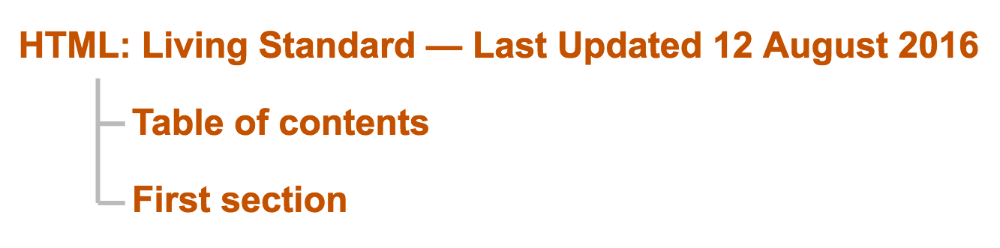
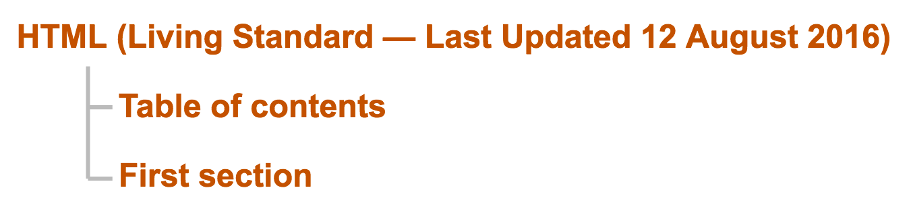

<hgroup> should not be used because no assistive technology supports it, and as a result it has a detrimental effect on assistance for headings placed within it.
For more information see the Usage notes below.
The <hgroup> HTML element represents a multi-level heading for a section of a document. It groups a set of <h1>–<h6> elements.
| Content categories | Flow content, heading content, palpable content. |
|---|---|
| Permitted content | One or more {{HTMLElement("h1")}}, {{HTMLElement("h2")}}, {{HTMLElement("h3")}}, {{HTMLElement("h4")}}, {{HTMLElement("h5")}}, and/or {{HTMLElement("h6")}}. |
| Tag omission | {{no_tag_omission}} |
| Permitted parents | Any element that accepts flow content. |
| Implicit ARIA role | No corresponding role |
| Permitted ARIA roles | Any |
| DOM interface | {{domxref("HTMLElement")}} |
This element only includes the global attributes.
The <hgroup> element has been removed from the HTML5 (W3C) specification, but it still is in the WHATWG version of HTML. It is partially implemented in most browsers, though, so is unlikely to go away.
However, given that a key purpose of the <hgroup> element is to affect how headings are displayed by the outline algorithm defined in the HTML specification—but the HTML outline algorithm is not implemented in any browsers—then the <hgroup> semantics are in practice only theoretical.
So the HTML5 (W3C) specification provides advice on how to mark up Subheadings, subtitles, alternative titles and taglines without using <hgroup>.
The <hgroup> element allows the primary heading for a document section to be grouped with any secondary headings—such as subheadings or alternative titles—to form a multi-level heading.
In other words, the <hgroup> element prevents any of its secondary <h1>–<h6> children from creating separate sections of their own in the outline—as those <h1>–<h6> elements otherwise normally would if they were not children of any <hgroup>.
So in the abstract outline produced by the HTML outline algorithm defined in the HTML specification, the <hgroup> as a whole forms a single logical heading, with the entire set of <h1>–<h6> children of the <hgroup> going into the outline as one multi-level unit, to comprise that single logical heading in the abstract outline.
To produce any (non-abstract) rendered view of such an outline, some choice must be made in the design of the rendering tool about how to render <hgroup> headings in such a way as to convey their multi-level nature. There are a variety of ways an <hgroup> might be shown in a rendered outline; for example:
<hgroup> might be shown in a rendered outline in with a colon character and space (“: ”) or other such punctuation after the primary heading and before the first secondary heading (and with the same or similar punctuation before any other secondary headings<hgroup> might be shown in a rendered outline in with the primary heading followed by parentheses around the secondary heading(s)Consider the following HTML document:
<!DOCTYPE html>
<title>HTML Standard</title>
<body>
<hgroup id="document-title">
<h1>HTML</h1>
<h2>Living Standard — Last Updated 12 August 2016</h2>
</hgroup>
<p>Some intro to the document.</p>
<h2>Table of contents</h2>
<ol id=toc>...</ol>
<h2>First section</h2>
<p>Some intro to the first section.</p>
</body>
A rendered outline for that document might look like the following:

That is, the rendered outline might show the primary title, HTML, followed by a colon and space, followed by the secondary title, Living Standard — Last Updated 12 August 2016.
Or, the rendered outline for that document might instead look like the following:

That is, the rendered outline might show the primary title, HTML, followed by the secondary title shown in parentheses: (Living Standard — Last Updated 12 August 2016).
<hgroup id="document-title"> <h1>HTML</h1> <h2>Living Standard — Last Updated 12 August 2016</h2> </hgroup>
The presence of hgroup may remove information reported to assistive technology about the subheading portion of the heading group.
{{Specifications}}
{{Compat}}